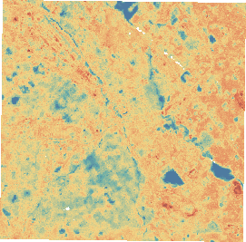

Prepare the satellite inputs
Remove cloudy pixels. Use six visible and infrared bands to measure vegetation, moisture and built-surface patterns, including nearby areas.
INPUT: REFLECTED LIGHTYOUTH FOR EARTH
Some city surfaces get much hotter than others. Satellite data can help identify where to investigate shade and greening first.
of San José studied using
real Landsat observations
A machine-learning study of surface heat, tested on later satellite images.

01 / FROM SATELLITE DATA TO A TESTED MODEL
Landsat is NASA and the U.S. Geological Survey’s Earth-observing satellite program. Its images capture reflected sunlight and heat emitted by the ground.
Remove cloudy pixels. Use six visible and infrared bands to measure vegetation, moisture and built-surface patterns, including nearby areas.
INPUT: REFLECTED LIGHTPair earlier light readings with known surface temperatures. ExtraTrees averages 220 decision trees, each learning rules that connect surface patterns to heat.
TRAINING ANSWER: THERMAL DATAEstimate heat in two unseen 2025 images using reflected light alone. Compare the estimates with the satellite’s withheld thermal readings.
OUTPUT: °C ABOVE OR BELOW THE IMAGE MEDIANThermal readings supply training answers and test results. They never enter the model as input features.
02 / MEASURED PERFORMANCE
Baseline: predict the scene median at every location.
Among locations flagged in the hottest fifth:
A match means a location was also in the satellite-measured hottest fifth. These results come from the later 2025 images.
03 / EXPLORE THE EVIDENCE
04 / FROM A MAP TO A BETTER FIELD SEARCH
Focus field checks on places with high estimated heat and little vegetation, then assess where shade or greening is feasible.
flagged for review
10.5% of the mapped area
Ground measurements, local tree canopy, water access, and community priorities.
This study identifies candidate areas. Cooling benefits still need field testing.
154.8 km² studied → 16.2 km² flagged